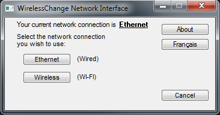
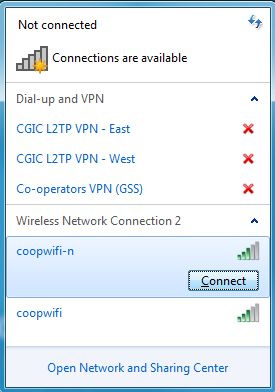
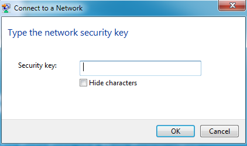
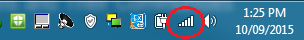
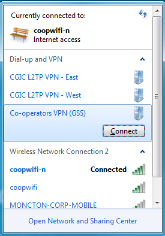

Welcome to the Windows 10 Instructional Dashboard
Wireless Change
This page will contain general information about how to use Wireless Change and how to connect to VPN once Wireless is connected
- Double click the Wireless Change icon on your desktop. If it is not located there, please see below.
- Click the Start button
- In the Windows Search Box, type 'Wireless Change'
- It should show up under Programs
- Once Wireless Change loads, you will be presented with a list of Network Connections to choose from.
- Click the radio button beside the wireless card
- Click Ok 
- You will know your Wireless Connection is active when you see the Wireless indicator appear in your Notification Area beside your clock

NOTE: By default, the system will always revert back to your Wired (Ethernet) connection when you restart your computer
- Now that your Wireless Adapter is active, click the Wireless Indicator icon to bring up the list of Wireless Networks available to you. From this list, choose the appropriate network and click Connect 
- Most Wireless Networks are secured with a password. You must know this password in order to connect. When prompted, enter the password and click Ok 
- Assuming the password was correct, after a short period, you will successfully connect to the Wireless Network and your Wireless Indicator will confirm this when the bars now display full 
NOTE: Reverting back yo your wired connection is as simple as re-launching Wireless Change, selecting the Ethernet radio button, and clicking Ok.
Can I use Wireless+VPN while at the office?
- Wireless connectivity is to be used for convenience sake and should not bused as your primary connection
- The reasons for this are:
- Wireless connections are much slower and less reliable than wired connections
- Security and Software updates are not always distributed over VPN Connections
- You login script will not run over VPN. A login script maps your network drives and printers when you initially login
VPN (Virtual Private Network)
After you have successfully connected to a Wireless Network, you will need to connect to the Cooperators network. In order to accomplish this, simply launch the VPN Connect icon found on your desktop.
Alternatively, you can manually connect to VPN by clicking your Wireless icon located in the notification area
- You have three choices to choose from when manually connecting to VPN:
- Co-operators VPN (GSS): Preferred connection. It will connect you to the best available network
- CGIC L2TP VPN - East: If GSS Fails, Connect here for Eastern Canada
- CGIC L2TP VPN - West:If GSS Fails, Connect here for Western Canada
- Select the VPN Connection you want and click Connect 
- The Connection will show Connected if it is successful
General VPN Troubleshooting
- Error 868
- Confirm you have internet connectivity, try browsing to a website such as www.google.ca
- Try to manually connect to each VPN as per instructions mentioned above until you are connected
- Restart your modem/router by unplugging it for 30seconds. NOTE: All devices connected to this will be disconnected for this period, including home devices such as computer, tablet, smartphone, etc.
- Contact Technical Support for further assistance if required
- Error 835
- Try to manually connect to VPN East or VPN West as per instructions mentioned above
- Contact Technical Support to have this problem permanently resolved
- Error 649
- Contact Technical Support for further assistance as this error indicates permissions are missing